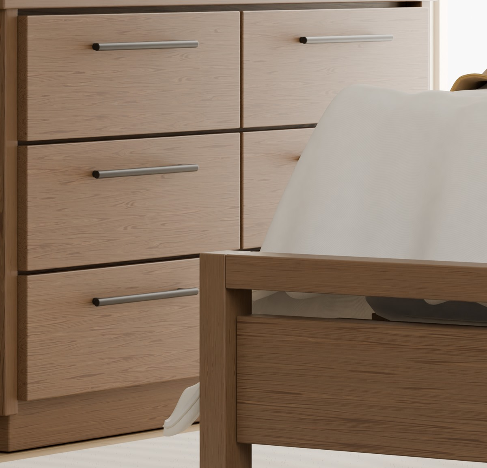
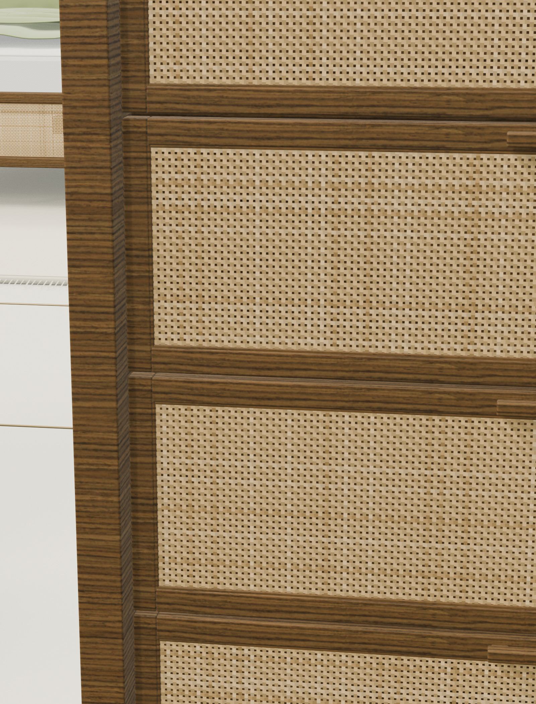

The reference.
Review the catalogue, dimensions, visual language and material details.

FOUR COLLECTIONS. ONE SPACE TO EXPLORE.
Discover the character of a room.
The craft of a piece. The beauty in the details.
WELCOME TO THE LIVING GALLERY
Warm walnut. Architectural ash. The quiet rhythm of woven rattan. Four distinct worlds come together in a gallery made for looking closer.
Explore original Blender imagery, discover twenty-eight catalogue pieces, and step into each space in 3D. An independent visualisation portfolio—not a manufacturer storefront.
CHOOSE YOUR WORLD

BEYOND THE STILL IMAGE
Walk through an exhibition. Orbit a piece. Open a drawer. Let a guided tour show you the details—or find your own way.
Enter the 3D gallery ↗THE MATERIAL LIBRARY
Look closer at timber grain, woven rattan, cotton folds and leather. See the surfaces that give each collection its character.
Explore the materials ↗
01 / NATURAL WALNUT
02 / WOVEN RATTANFOUR WAYS OF SEEING
A room study and three catalogue collections. Distinct materials, moods and stories, brought together in one place.
Walnut Bedroom is an independent room study. SIENNA and HOI AN reference supplied Living Ikon catalogues; MADISON references the supplied MARINER classic catalogue; original product designs remain with their respective owners.
THE ORIGINAL REFERENCE
LIGHT, SPACE & PERSPECTIVE / 3D VISUALISATION
Original Blender imagery.
Rendered from the native scenes.
A CLOSER CONNECTION
Request the original scene, models, renders, or a project of your own.
THE COMPLETE CATALOGUE EDIT
Twenty-eight catalogue pieces from SIENNA, HOI AN and MADISON. Compare their character, discover the dimensions, and inspect the models in 3D.
Tap a catalogue image to enlarge it without loading 3D. Choose Inspect in 3D for the reconstructed model. Original catalogue references are not verified physical material-sample photographs. Dimensions: width × depth × height, in millimetres.
Try a different name, SKU, collection or category.
ONE GALLERY. YOUR PERSPECTIVE.
Choose a collection. Follow the tour.
Or let your curiosity lead the way.
YOUR NEXT PERSPECTIVE
The model loads only when you choose to explore.
Choose a view to jump to a display. In Overview, drag to rotate and pinch to zoom.
In Walk mode, drag the left joystick and swipe the view with your other thumb. Use W A S D on a keyboard. Walnut is an orbit-only room study.
Guided Tour moves between curated viewpoints. Pause or exit it whenever you like. Select furniture for dimensions and full-detail inspection.
Only the chosen collection is loaded. Original Blender render galleries remain available without WebGL. Real-time lighting differs from the final renders.
The original catalogue reference, alongside an independently reconstructed 3D model. Open the image for a closer look at the visible grain, finish and product details.
Catalogue imagery is not a calibrated material sample or proof of solid-wood construction. Colours and grain vary with lighting, screens and the actual material. Confirm composition and finish with the supplier.
THE MATERIAL LIBRARY
From grained timber to handwoven rhythm. Explore the supplied catalogue references, then look closer at our reconstructed material details.
01 / ORIGINAL CATALOGUE IMAGES
Supplied catalogue crops show the visible finish, grain pattern and construction details. Tap an image to enlarge it.
Source: the supplied 2026 Living Ikon catalogue. These are original catalogue images, not verified physical material-sample photographs. Solid wood, veneer and MDF are different constructions; confirm the product specification with the supplier. Colour and grain vary with lighting, screens and materials.
02 / RECONSTRUCTED 3D MATERIALS
Blender render details.
Not physical sample photographs.
The material-detail images above are original Blender renders or crops from those renders. Materials and colours are visual interpretations. Browser lighting and reflections differ from native rendering.
THE CREATOR / THE CRAFT
WEBSITE & 3D VISUALISATION
I bring furniture references into digital spaces—through detailed Blender modelling, original renders, and interactive websites that invite people to look closer.
FROM SOURCE TO EXPERIENCE
Review the catalogue, dimensions, visual language and material details.
Build editable geometry, textures and articulated details in Blender.
Bring renders and optimised 3D models into a unified, mobile-aware website.
YOUR STARTING POINT
All requests open the creator's WhatsApp draft. You choose whether to send it. Public static assets and original repositories are not access-controlled by the contact popup.
A DIFFERENT TURN
Return to the gallery and find your next perspective.
Back to the gallery ↗YOUR NEXT PROJECT STARTS WITH A CONVERSATION